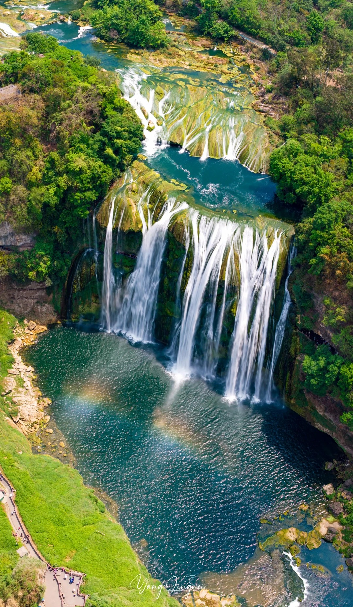
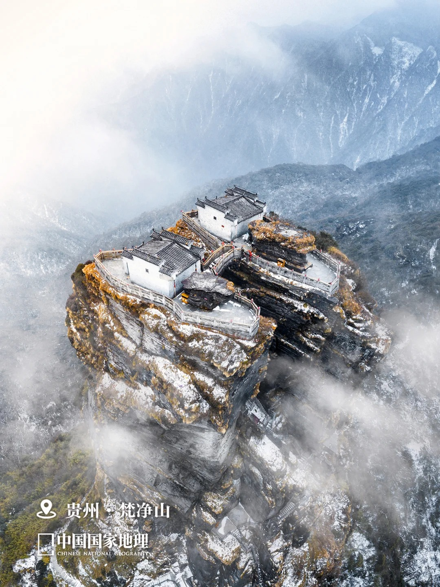
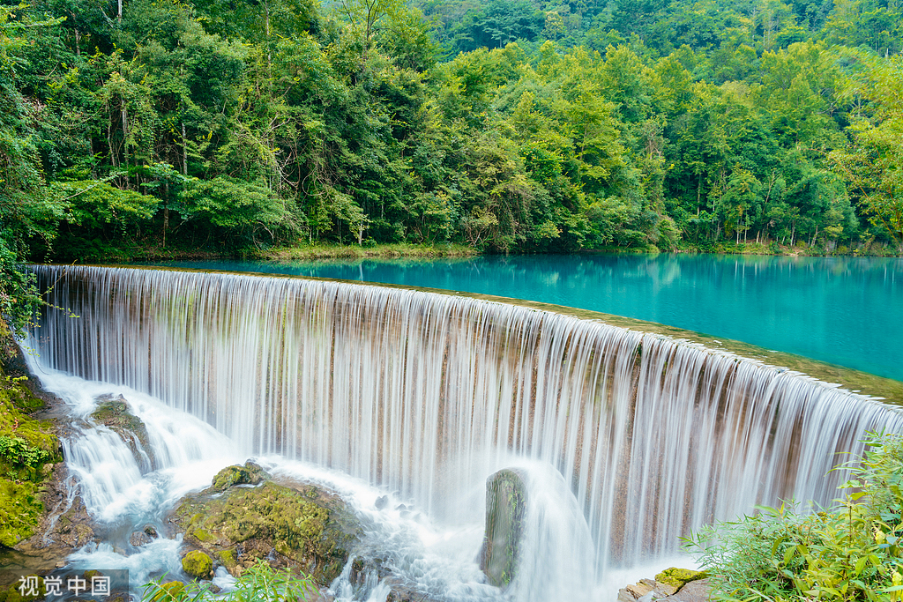
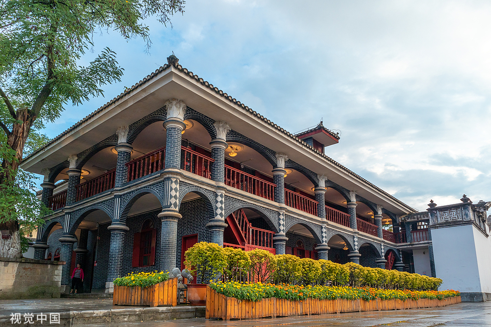

黄果树瀑布
位于安顺市，是贵州最具代表性的瀑布景观之一，周边还有天星桥、陡坡塘等景点

梵净山
位于铜仁市，是世界自然遗产地，以独特山体形态和丰富生物多样性著称

荔波小七孔
位于黔南州荔波县，以碧绿水体、瀑布和喀斯特森林景观吸引游客
西江千户苗寨
位于黔东南州雷山县，吊脚楼依山而建，是体验苗族文化的重要目的地

遵义会议会址
位于遵义市，是重要的红色文化教育基地，具有深厚的历史意义
贵阳街巷
省会贵阳的日常街巷、早餐铺和市场，是了解城市生活的一扇窗口
特色美食
贵州部分地方食物
| 美食名称 | 常见地区 | 主要特点 |
|---|---|---|
| 酸汤鱼 | 黔东南 | 酸香开胃，汤色红亮，是贵州代表性菜肴之一，有时会做成酸汤鱼粉作为一天的早餐进行食用 |
| 丝娃娃 | 贵阳 | 用薄面皮包裹蔬菜丝，蘸调料食用，清爽可口（其实一般都加辣椒水汤汁） |
| 肠旺面 | 贵阳 | 面条配猪肠、血旺和红油，是贵阳常见早餐，不爱内脏的人请勿靠近！感觉还是有点点腥味呢 |
| 羊肉粉 | 遵义、六盘水等地 | 羊肉汤配米粉，味道鲜美，腥味？不存在的！水城羊肉粉是我这一生中最难以忘怀的早餐（想你了） |
| 豆汤圆子火锅 | 贵阳 | 超级下饭的美味火锅来了，肉圆子加上熬起沙的花豆一起炖煮，汤汁浓稠美味，加上秘制蘸水，配一口米饭，yummyyummy |